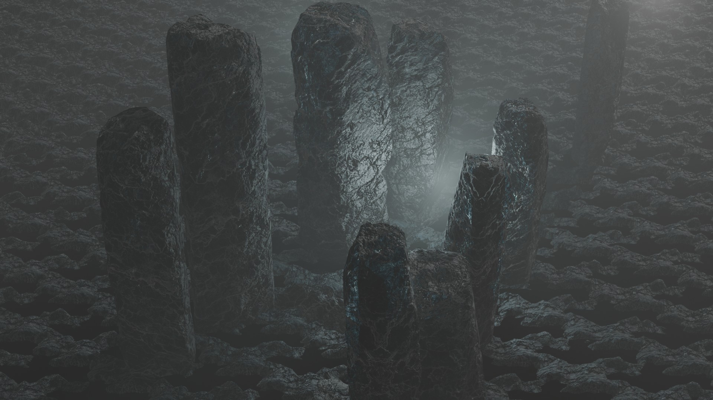

Architecture
Z-Day: Rise of the Horde
World-Building & Narrative: Set in the dystopian future of 2047, the world is engulfed in a high-tech nuclear war where traditional nuclear weapons are no longer the ultimate lethal threat. Amidst the chaos, a bio-research facility named HelixCore is desperately developing an anti-radiation vaccine. A sudden explosive tremor breaches containment, causing a rapid leak of the highly volatile Nexis-9 virus. Lead researcher Barr is directly exposed, triggering an uncontrollable and agonizing mutation. As his physical form distorts and tears through his hazmat suit, he transforms into a sentient, mutated undead. Consumed by panic, Barr rampages through the lab, inadvertently knocking over nuclear waste and breaching the main reactor—leading to an uncontrollable fusion meltdown. Agent 1012, a tactical operative, is dispatched following the facility's distress signal with a critical mission: shut down the reactor and lock down the site. Currently in development, this sequence represents the climactic ending of Part I, laying the groundwork for upcoming chapters exploring nuclear fallout, viral mutation, and the technological arms race.

